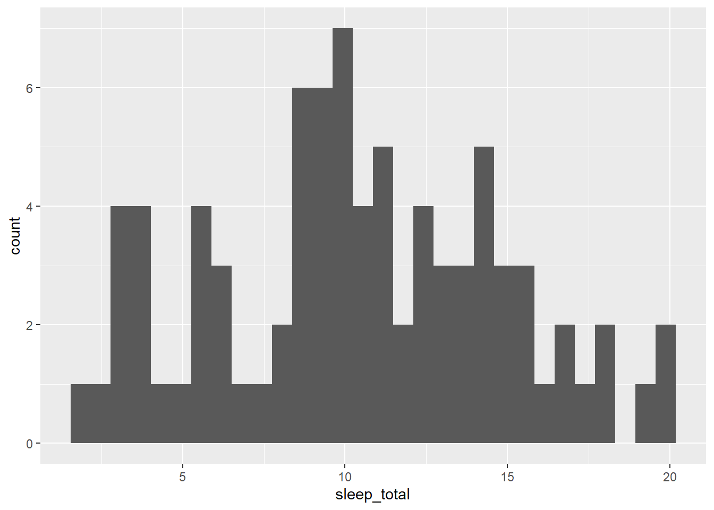

# A tibble: 6 × 11
name genus vore order conservation sleep_total sleep_rem sleep_cycle awake
<chr> <chr> <chr> <chr> <chr> <dbl> <dbl> <dbl> <dbl>
1 Cheetah Acin… carni Carn… lc 12.1 NA NA 11.9
2 Owl mo… Aotus omni Prim… <NA> 17 1.8 NA 7
3 Mounta… Aplo… herbi Rode… nt 14.4 2.4 NA 9.6
4 Greate… Blar… omni Sori… lc 14.9 2.3 0.133 9.1
5 Cow Bos herbi Arti… domesticated 4 0.7 0.667 20
6 Three-… Brad… herbi Pilo… <NA> 14.4 2.2 0.767 9.6
# ℹ 2 more variables: brainwt <dbl>, bodywt <dbl>
summary(msleep)
name genus vore order
Length:83 Length:83 Length:83 Length:83
Class :character Class :character Class :character Class :character
Mode :character Mode :character Mode :character Mode :character
conservation sleep_total sleep_rem sleep_cycle
Length:83 Min. : 1.90 Min. :0.100 Min. :0.1167
Class :character 1st Qu.: 7.85 1st Qu.:0.900 1st Qu.:0.1833
Mode :character Median :10.10 Median :1.500 Median :0.3333
Mean :10.43 Mean :1.875 Mean :0.4396
3rd Qu.:13.75 3rd Qu.:2.400 3rd Qu.:0.5792
Max. :19.90 Max. :6.600 Max. :1.5000
NA's :22 NA's :51
awake brainwt bodywt
Min. : 4.10 Min. :0.00014 Min. : 0.005
1st Qu.:10.25 1st Qu.:0.00290 1st Qu.: 0.174
Median :13.90 Median :0.01240 Median : 1.670
Mean :13.57 Mean :0.28158 Mean : 166.136
3rd Qu.:16.15 3rd Qu.:0.12550 3rd Qu.: 41.750
Max. :22.10 Max. :5.71200 Max. :6654.000
NA's :27
str(msleep)
tibble [83 × 11] (S3: tbl_df/tbl/data.frame)
$ name : chr [1:83] "Cheetah" "Owl monkey" "Mountain beaver" "Greater short-tailed shrew" ...
$ genus : chr [1:83] "Acinonyx" "Aotus" "Aplodontia" "Blarina" ...
$ vore : chr [1:83] "carni" "omni" "herbi" "omni" ...
$ order : chr [1:83] "Carnivora" "Primates" "Rodentia" "Soricomorpha" ...
$ conservation: chr [1:83] "lc" NA "nt" "lc" ...
$ sleep_total : num [1:83] 12.1 17 14.4 14.9 4 14.4 8.7 7 10.1 3 ...
$ sleep_rem : num [1:83] NA 1.8 2.4 2.3 0.7 2.2 1.4 NA 2.9 NA ...
$ sleep_cycle : num [1:83] NA NA NA 0.133 0.667 ...
$ awake : num [1:83] 11.9 7 9.6 9.1 20 9.6 15.3 17 13.9 21 ...
$ brainwt : num [1:83] NA 0.0155 NA 0.00029 0.423 NA NA NA 0.07 0.0982 ...
$ bodywt : num [1:83] 50 0.48 1.35 0.019 600 ...
[PRES - exercise]
1.3 Exploring Categorical Data
We can use the distinct() function to identify a list of unique values in the “genus” column. To apply it to one column of the dataset, let’s practice using the piping syntax of tidyverse:
To generate a frequency count of the values found in a column we can use the function count(). To sort the results, we can also add the parameter sort=TRUE.
Let’s explore a different column: “conservation” (for conservation status of the mammals):
msleep |>count(conservation, sort=TRUE)
# A tibble: 7 × 2
conservation n
<chr> <int>
1 <NA> 29
2 lc 27
3 domesticated 10
4 vu 7
5 en 4
6 nt 4
7 cd 2
The dataset did not come with a dictionary defining these abbreviations. However, after a few minutes browsing online I found this:
[PRES - conservation]
2. Histograms
Histograms are useful for visualizing the distribution of numerical data for a particular variable.
For this simple plot type, we can use the built-in hist function in base R:
hist(msleep$sleep_total)
Of course, ggplot allows us to create the same thing.
The conventional syntax to plot with ggplot is:
ggplot(data=dataset_name, aes(columns assigned to particular visual variables such as x coord, y coord, color fill, color outline, etc.)) +
geom_name(any_additional_arguments)
Thus, to create a histogram, we will want to use geom_histogram as our geom_name and set x as the column we want to inspect:
`stat_bin()` using `bins = 30`. Pick better value with `binwidth`.

However, the gglot version doesn’t look as nice. Since ggplot allows a lot more customization, we will need to be more specific in our instructions, adding in parameters for the color fill (fill), color outline (color), and binwidth.
A histogram is a type of bar plot designed to show the distribution of numerical data by placing this data into “bins” covering a particular range of numerical values.
More conventional bar plots visualize the number of items found in different categories. Since we are interested in counts of categorical data (i.e. the number of carnivores vs. herbivores in the dataset), we will need to pass the argument stat='count' into the geom_bar.
We can re-order (or re-*arrange* using tidyverse terminology) the columns using the fct_infreq() function which is imported with tidyverse as part of the forcats package. Note: it still places the NA’s on the furthest right, regardless of their frequency.
We can even divide each bar into stacks by assigning the categories in another column to the fill parameter. Let’s place the order column on the x axis and pass in the conservation column into the fill parameter.
This dataset seems to be especially suited to examining relationships in the animal world. More specifically: what types of animals (by genus, order, size, diet) sleep the most / least? What is the relationship between length of sleep cycles and Rem sleep to total daily sleep?
Let’s first examine the relationship between size and total sleep. We can add in diet and other variables later.
For a scatter plot we will want to use geom_point().
You may notice two extremely heavy animals in this scatter plot. Can you guess what they are?
We can discover what these two animals are by using tidyverse’s filter() function to filter out all animals less than a given weight in kilograms:
msleep |>filter(bodywt>1000)
# A tibble: 2 × 11
name genus vore order conservation sleep_total sleep_rem sleep_cycle awake
<chr> <chr> <chr> <chr> <chr> <dbl> <dbl> <dbl> <dbl>
1 Asian … Elep… herbi Prob… en 3.9 NA NA 20.1
2 Africa… Loxo… herbi Prob… vu 3.3 NA NA 20.7
# ℹ 2 more variables: brainwt <dbl>, bodywt <dbl>
Given the way a few heavy animals skews the distribution of animal weights in this dataset, perhaps we should try distributing weights using a logarithmic scale. We can do that by adding:
Warning: Removed 51 rows containing missing values or values outside the scale range
(`geom_point()`).
Removed 51 rows containing missing values or values outside the scale range
(`geom_point()`).
Warning: Removed 51 rows containing non-finite outside the scale range
(`stat_density()`).
Warning: Groups with fewer than two data points have been dropped.
Warning in max(ids, na.rm = TRUE): no non-missing arguments to max; returning
-Inf
Warning: Removed 22 rows containing missing values or values outside the scale range
(`geom_point()`).
Warning: Removed 51 rows containing missing values or values outside the scale range
(`geom_point()`).
Warning: Removed 27 rows containing missing values or values outside the scale range
(`geom_point()`).
Notebook 3b - Titanic
Start with hypothesis and summary data like 03a
dataset_name |>
function(column)
titanic = Titanic |>as_tibble()
titanic |>distinct(Class)
# A tibble: 4 × 1
Class
<chr>
1 1st
2 2nd
3 3rd
4 Crew
titanic |>distinct(Class, Sex)
# A tibble: 8 × 2
Class Sex
<chr> <chr>
1 1st Male
2 2nd Male
3 3rd Male
4 Crew Male
5 1st Female
6 2nd Female
7 3rd Female
8 Crew Female
To generate a frequency count of the values found in a column we can use the function count(). To sort the results, we can also add the parameter sort=TRUE.
titanic |>count(Class, sort=TRUE)
# A tibble: 4 × 2
Class n
<chr> <int>
1 1st 8
2 2nd 8
3 3rd 8
4 Crew 8
Exercise 2.2.
Try applying these same summary functions to a different preloaded dataset to better understand the data it contains.
ggplot(titanic, aes(x = Class, y = n, fill = Survived)) +geom_bar(stat ="identity", position ="fill") +facet_grid(Sex ~ Age)
Warning: Removed 4 rows containing missing values or values outside the scale range
(`geom_bar()`).
Calculate Survival Rate
At the moment, the dataset is grouped by sex, age (child or adult), passenger class, and survival. To help us identify the passengers most likely to survive, we first need to know how many people were in each demographic group (i.e. sex, age, class with survival excluded) and then calculate the percent of each group that survived.
# Calculate survival rates by Class and Sex survival_rates <- titanic_summary |>group_by(Class, Sex) |>summarize(survival_rate =mean(survival_rate, na.rm=TRUE))
`summarise()` has grouped output by 'Class'. You can override using the
`.groups` argument.
# Heatmap of survival rates ggplot(survival_rates, aes(x = Class, y = Sex, fill = survival_rate)) +geom_tile()
Heatmap of survival rates
ggplot(survival_rates, aes(x = Class, y = Sex, fill = survival_rate)) + geom_tile()
ggplot() +geom_line(data=year_avgs |>filter (type=="maxtemp"& Year <2024), aes(x=Year, y=T_yravg), color="red") +geom_line(data=year_avgs |>filter (type=="mintemp"& Year <2024), aes(x=Year, y=T_yravg))
Warning: Removed 9 rows containing missing values or values outside the scale range
(`geom_line()`).
Removed 9 rows containing missing values or values outside the scale range
(`geom_line()`).
2.1 Adjust temperature data (long to wide), add color, and a rolling average